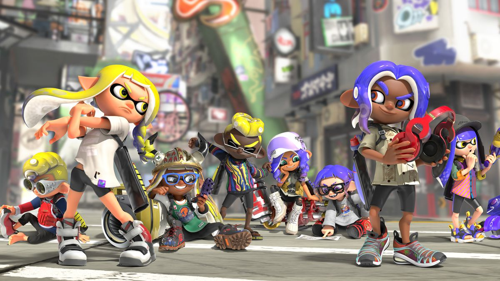
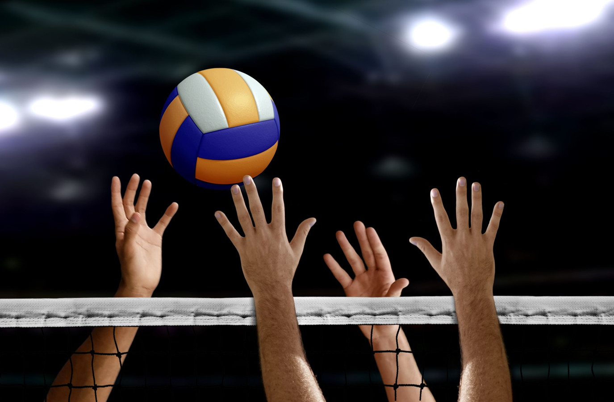

Misschien al wel duidelijk, maar ik ben dus Tygo. Ik hou heel erg van gamen en dan voornamelijk Nintendo Games. Van alle Nintendo games zijn er maar een paar mijn echte favoriet.
Ik ben echt gek van alle Mario games, dus zoals Mario Kart, Mario Bros, Mario Maker en nog veel meer.
Ook ben ik echt gek op de game Splatoon (3). Splatoon is mijn echte favoriete game. Ik ben er niet weg van te krijgen.
Tegelijk de tijd ben ik niet alleen aan het gamen, maar neem ik ook al video's op voor mijn YouTube kanaal. Sinds Februari 2020 is corona langzamer hand gaan komen en wou ik een keer wat anders doen dan alleen maar gamen. Zo is mijn YouTube kanaal gecreeërd. Ik deed het alleen maar omdat ik het zelf leuk vind, maar nu ik steeds dichterbij het moment dat ik geld kan verdienen ben ik door blijven gaan met YouTube en het groeien gaat steeds sneller.
Naast het gamen en video's maken, ben ik ook dol op sporten en dan voornamelijk volleyballen

Nintendo is een bedrijf in het Japanse Kyoto. Ze begonnen met het verkopen van spelkaarten in 1889. Daar zijn ze mee doorgegaan tot maarliefst 1969. Na 1969 zijn ze begonnen met het verkopen van spelgoed. Via dit speelgoed waren ze beland bij de computerspellen. Ze zijn er erg lang mee bezig geweest en dan is er ook in 1981 de eerste console: Nintendo Game & Watch. Het blijf er niet bij, want niet velen later in 1989 kwam de Gameboy en daarna blijf het bedrijf maar groeien meet steeds meer consoles. In het volgende tabel zie je in welk jaar wat ge-released werd: | Jaar Uitgave | Console | | 1981 | Game & Watch | | 1985 | NES | | 1988 | Game Boy | | 1991 | SNES | | 1996 | Nintendo 64 | | 2001 | Game Boy Advance| | 2002 | GameCube | | 2003 | Nintendo DS | | 2006 | WII | | 2011 | Nintendo 3 DS | | 2012 | WII U | | 2017 | Nintendo Switch | Dit zijn alle titels van de consoles. Alle updates van de consoles staan er niet tussen. Zoals de Nintendo Switch Lite en Nintendo Switch OLED

Mario is een videospel-personage, ontwikkeld door een Japanse spelontwerper en wordt gezien als de mascotte van Nintendo. Mario heeft al in meer dan 200 videospellen een rol gespeeld sinds hij werd ontwikkeld en hoewel hij eigenlijk alleen in platformspellen verscheen, verschijnt hij tegenwoordig in allerlei soorten spellen, zoals racegames, puzzelspellen, role-playing games, vechtgames, sportgames en vele anderen soorten spellen. Mario maakte zijn debuut in het arcadespel Donkey Kong in 1981. In Donkey Kong Junior in 1982 was hij de schurk en in het eindfilmpje gaat hij knock out. De spellen waren erg succesvol en werden daardoor er ook een arcade-spin-off verscheen, Mario Bros. In 1983, dat een twee-speler modus bevatte en ook zijn langere doch jongere broer Luigi introduceerde. Zijn volgende verschijning was in Super Mario Bros. voor het Nintendo Entertainment System (NES).
 Splatoon
Splatoon
Splatoon is een third-person shooterspel ontwikkeld en uitgegeven door Nintendo voor de Wii U. Het is het eerste deel uit de Splatoon-serie en verscheen in Japan op 28 mei 2015 (In Amerika en Europe was het 29 mei 2015 en in Australië was het 30 mei 2015), en de dagen erna ook in andere werelddelen. Het spel bevat een singleplayer-modus met verhaallijn en een online multiplayer-modus, waarin spelers het in teams van vier tegen elkaar opnemen. In Splatoon neemt de speler de vorm aan van een 'Inkling'; een fictief wezen wat zowel mens is als inktvis. In hun gedaante als mens hebben Inklings toegang tot inkt-spuwende wapens die gebruikt worden om hun omgeving onder te dompelen in inkt waarna ze vervolgens als inktvis moeiteloos over het besmeurde terrein kunnen navigeren, zelfs tegen verticale muren op. In het spel neemt de speler deel aan korte online multiplayer-wedstrijden waarin acht spelers verdeeld worden over twee teams van elk vier 'Inklings'. Binnen drie minuten moeten de teams zoveel mogelijk terrein veroveren door het te beschilderen of te bespetteren met inkt (Turf War). Deze specifieke nadruk op gebiedscontrole, in plaats van aantal gedode vijanden, maakt het dat 'Splatoon' zich onderscheidt van andere spellen binnen het shooter-genre. Er zijn allerlij gamemodes. De makkelijkste is Turf War dat net is uitgelegd. Een andere optie is Ranked/Anarchy/X Battles. Hierin zitten 4 verschillende game modes, maar waar 1 tegelijk speelbaar is die om de 2 uur veranders. De gamemodes zijn Tower Control, Splat Zones, Clam Blitz en Rainmaker. In Tower Control is het de bedoeling dat je de toren zo snel mogelijk naar de andere kant toe speelt. Bij Splat Zones is het de bedoeling dat je de aangegeven zone zo lang mogelijk in jouw kleur houd. In Clam Blitz is het de bedoeling dat je zoveel mogelijk schelpen in andermans kooi gooit. Bij Rainmaker is het de bedoeling dat je de Rainmaker naar anderemans kant toe speelt. Al deze modes zijn 5 minuten, maar mocht je team het goal al eerder berijkt heb, heb je het andere team KO gespeelt.
Volleybal is een balsport waarbij het speelveld is verdeeld in twee gelijke helften gescheiden door een net. Het net is tussen twee palen gespannen en bevindt zich op een bepaalde hoogte boven de grond. Deze hoogte is 2,43 m voor heren en 2,24 m voor dames. Bij de jeugd is de nethoogte afhankelijk van de leeftijd en het niveau van de spelers.[1] De beide teams, die elk uit zes spelers bestaan, bevinden zich ieder op hun eigen helft en proberen door het slaan of tikken tegen de bal deze op het tegenoverliggende deel van het speelveld binnen de lijnen de grond te doen raken. Een geslaagde poging, of een fout van de tegenstander, levert een punt op. Wie het eerst 25 punten heeft behaald wint de set. Wie het eerst drie sets heeft gewonnen, wint de wedstrijd. Bij een gelijke stand, 2–2 in sets, wordt een beslissende set tot 15 punten gespeeld, bij deze beslissende set wordt er van kant gewisseld bij de eerste die acht punten heeft.
